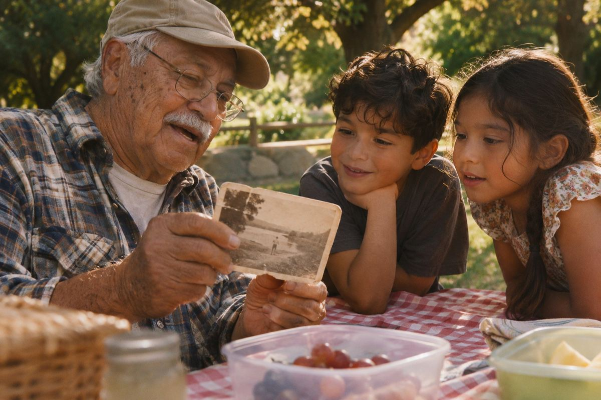

Family Reunion Photo Ideas (and How to Collect Them)
Group shots, generational photos, a scavenger hunt, and getting every photo to Grandma.

Short answer: The best family reunion photo ideas start with the everyone photo: schedule it early, shoot from a deck, window or stepladder, and seat the oldest relatives in front. Then add generational photos, branch-by-branch groups, a photo scavenger hunt, a simple backdrop booth and an old-photo wall. Before the day, pick one place where relatives on iPhone and Android will share their photos.
This guide takes each of those in turn: a step-by-step plan for the big group photo, a shot list of generational and branch photos, a printable scavenger hunt, booth and backdrop ideas, and a way to display old photos without risking the originals. The last part tackles the problem every reunion runs into: collecting photos from dozens of phones and getting them to the grandparents who don’t use any of them.
The family reunion group photo, step by step
The everyone photo is the one people frame. It’s also the one that gets skipped, because by the time someone suggests it, half the cousins have left for the lake. Treat it like an appointment.
- Schedule it. Put a time on the invite, about an hour after the official start, once late arrivals are in and before the big meal, the swimsuits or the first goodbyes.
- Pick even light. Open shade, such as the shady side of a house, beats bright sun, which makes people squint and throws hard shadows under eyes. Under a tree works only if the shade has no bright spots.
- Get some height. Shoot from a deck, a second-floor window or a sturdy stepladder (with someone holding it), angled slightly down. A higher camera shows more faces in the back rows.
- Seat the elders first. Chairs front and center for grandparents and anyone who can’t stand for long, with the youngest kids on laps or sitting on the grass in front.
- Build out by branch. Each of the grandparents’ children stands behind them with their own household, so every branch forms a loose column. Tallest at the back and the edges.
- Check every face. Tell everyone: if you can’t see the camera, it can’t see you. Then count heads against the guest list and go find the missing uncle.
- Take ten, then one silly one. With 40 people, somebody blinks in almost every frame. Take ten, then call out “everyone point at Grandma” for the one people actually share.
- Get the photographer in. Put the phone on a tripod or a steady surface, set the 10-second timer and walk into the gap you saved. Or ask a neighbor or a member of the venue staff for a few frames.
How to arrange a big family
| Group size | Formation that works | Where to stand |
|---|---|---|
| 10 to 15 | Seated front row, standing back row | A porch, a couch, a picnic bench |
| 15 to 30 | Three levels: chairs, standing, a back row on a step or bench | Porch steps, a garden wall |
| 30 to 60 | Rows climbing a slope, or everyone on the lawn shot from above | A staircase, a hillside, a deck looking down |
| 60 or more | One wide crowd shot from up high, then a photo per branch | A balcony or second-floor window, everyone looking up |
With a big family, the 0.5x ultra-wide is tempting because everyone fits. Step back on the 1x lens instead: the ultra-wide stretches faces at the edges of the frame, which is exactly where you put the tallest cousins.
Family reunion photo ideas for every generation
These are the photos that get more valuable every year. Write the list on a phone note, give it to one organized relative, and run them in a 20-minute block right after the everyone photo, while people are already gathered and dressed.
- Four or five generations. The oldest relative seated, holding or next to the newest baby, with one person from each generation in between.
- The original family. The grandparents with only their children, in birth order, like the old photo on the mantel.
- Grandparents with every grandchild, then again with the great-grandchildren.
- Siblings in birth order, for every generation, in the same spot so the photos line up.
- All the cousins, oldest to youngest, in one long line.
- Hands. One hand from each generation stacked on the picnic table, rings and wrinkles and all.
- Then and now. Recreate one old family photo, same pose and same place if you can.
- Namesakes. Everyone named after a relative, standing with that person or holding their photo.
- Every couple, including the newest one. Some haven’t had a photo together in years.
- Each household on its own, which quietly solves this year’s holiday card.
A family reunion photo scavenger hunt (printable list)
A scavenger hunt turns the kids and teens into photographers and produces candids nobody would think to stage. Mix ages on every team: a grandparent and a teenager make a strong pair, because one knows the stories and the other knows the phone.
How to run it
- Teams: three to five people, at least two generations per team.
- Time: 45 to 60 minutes, with a hard stop before dinner.
- Points: 1 for easy finds, 2 for anything that needs a relative’s help, 3 for the hard ones.
- Payoff: show the best photos at dinner and let the winners go first in the dessert line.
The list
- The oldest and the youngest person at the reunion, together.
- Whoever traveled the farthest, with proof (a ticket stub or a license plate).
- Three relatives who share the same nose, chin or laugh.
- Someone wearing something they also wore at a past reunion.
- A relative telling a story with their hands.
- The cook of the best dish, holding the dish.
- Two cousins meeting for the first time.
- A family heirloom and the person who looks after it now.
- Everyone who shares a first initial, in one photo.
- Something that has been in the family longer than the youngest parent.
- A grandparent teaching a kid a game from their own childhood.
- A recreation of a photo from the old-photo wall.
- The relative with the most grandchildren, surrounded by all of them.
- The kids’ table, shot from a kid’s eye level.
- Matching shirts on people from three different branches.
- The longest-married couple recreating their wedding pose.
- Three generations making the same silly face.
- The whole reunion from the highest point you can safely reach.
- Someone who looks just like an ancestor in an old photo, side by side.
- The best hug of the day.
Print the list on a half sheet with the reunion name and year at the top. Afterward, the winning team’s sheet and their best photos make a good first page for the reunion photo book.
Family reunion photo booth ideas and backdrops
A booth gives shy relatives a low-pressure place to be photographed and gives you dozens of small-group shots without organizing anything. Keep it simple: a backdrop, soft light and a few props.
Backdrops
- A family quilt or tablecloth pinned to a clothesline or fence.
- A painted bedsheet with the family name and the year.
- A big thrift-store picture frame with the glass removed, for people to hold up.
- A family tree banner with blank leaves for writing in new babies and new spouses.
- A barn door, garage door or brick wall in open shade.
- A balloon garland in the reunion T-shirt color.
Props and setup
- Props with a story: hats or jerseys from the family’s hometown, a chalkboard for “years married” or “miles traveled,” and a framed photo of relatives who couldn’t come.
- Light: put the booth in open shade or facing a window, never with the sun behind people’s heads.
- A booth host: a phone on a tripod with a 10-second timer, or a teenager in charge for an hour.
The same habits that make a party booth work apply here; here’s more on taking good photos at a party, from light to timing.
An old-photo wall that protects the originals
An old-photo wall is the most crowded corner of most reunions. It also puts irreplaceable prints in sunlight, near food and in a lot of hands. The fix is simple: show copies.

The National Archives’ guidance on displaying family photos says the best protection from light is to display copies and keep the originals in a box, and that color scans and color photocopies make good copies for display.
- Copy the originals a few weeks ahead. Scan them or photograph them flat in window light.
- Print the copies at 4×6 or 5×7 and pin or tape up the copies only.
- If originals must come, keep them in a box or sleeves on a shaded table. The Library of Congress recommends handling photos by the edges with clean hands and never putting tape, sticky notes or glue on them.
- Number every copy and leave a “Who is this?” sheet and a pen beside the wall. Older relatives will fill in names, dates and places you’d never get otherwise.
- Record the stories. Ask a grandchild to take two-minute voice memos of grandparents explaining their favorite photo.
How to share family reunion photos from 40 different phones
Here’s the real problem. Forty relatives arrive with forty phones: iPhones and Android phones, some new and some not, run by people who range from power users to the great-aunt who still prints her emails. After the reunion, every photo stays on the phone that took it unless you pick one place for them before the day starts.
- A Google Photos shared album is the safest default for mixed phones. Google’s help page says that when you share a link to an album, anyone with the link can view the photos and add to the album. It doesn’t say whether relatives must sign in to Google to add, so try the link on one relative’s phone a week ahead, then turn it into a QR code for the welcome table.
- An iCloud shared album suits iPhone-heavy families. Apple says that with version 27 software, friends and family can join and contribute their own photos on the web, even without an Apple Account or Apple device. It has limits worth checking first, which our guide to iCloud shared albums for events walks through.
- The family group chat is fine for the first evening, but many chat apps compress photos, and the good ones are buried by Tuesday. Our comparison of the best way to share photos with a group covers the trade-offs app by app.
- A designated photo cousin ties it together: one organized relative who collects everything, deletes the duplicates and builds the book, with a two-week deadline.
| Option | Works on | Best for | Watch out for |
|---|---|---|---|
| Google Photos shared album | iPhone, Android, computers | Mixed families, a long-term album | People forget to add photos once they’re home |
| iCloud shared album | Apple devices, plus the web on version 27 | Mostly-iPhone families | Test the web join with one Android phone first |
| Group chat | Everyone | The first night | Compressed photos, buried under new messages |
| Shared camera app | iPhone app, or any phone’s browser | Photos taken during the reunion, opened together | The host needs an iPhone; a free film covers up to 10 guests |
| Prints and a photo book | Anyone, no phone needed | Grandparents and the family archive | Someone has to make it |
Getting photos to grandparents who don’t use apps
- A printed book. Google Photos, for example, sells photo books as a 7-inch softcover or a 9-inch hardcover. Any print service works; the deadline matters more than the vendor.
- Prints by mail. A stack of 4×6 prints of every photo they appear in, mailed within a week.
- A digital frame that the rest of the family can send photos to.
For paper sizes, finishes and what prints well from a phone, see our guide to printing your photos.
Running the reunion day on one shared camera
For the reunion day itself, Filmsera turns everyone’s phone into one shared disposable camera. The host creates a film in the iPhone app, saves the QR code from the invite card and prints it on a sign for the welcome table. Relatives scan it and start shooting, either in the free iPhone app or in any phone’s browser, Android included, with no app or account. That matters for the relatives who won’t install anything. Browser guests take photos only, no video clips.

Photos stay hidden until the reveal time the host picks, so nobody spends the reunion scrolling. The Tonight, Tomorrow and In 3 days presets all develop at 9 p.m., which suits the evening after everyone gets home; for a reveal at the farewell breakfast, the host chooses Custom and sets the time. Then the whole roll appears at once for everyone in the film, each photo tagged with who took it, including the cousin nobody knew had a good eye. Photo Booth mode shoots strips with a 3-2-1 countdown, and a strip can be added to the film or exported print-ready for the grandparents.

Know the limits before you plan around it. The host needs an iPhone (iOS 17 or later). A free film covers up to 10 guests, and a bigger family needs a one-time pass for that film, not a subscription; the Filmsera FAQ lists the tiers. Free films keep photos on Filmsera’s servers for 30 days after the reveal, so save the keepers to your phone and move them into the long-term album. More on Filmsera for parties, reunions and trips.
Filmsera gives every relative, on iPhone or Android, one shared camera for the reunion and opens the whole roll for everyone at the same moment. Get Filmsera on the App Store
After the reunion: a two-week photo plan
- Day one: post the album link in the family chat with a deadline for adding photos.
- Week one: the photo cousin deletes duplicates and blurry shots, and writes down who is in each group photo while memories are fresh.
- Week two: order the book and the prints for the grandparents, and mail them.
- Keep two copies: the shared album, plus a drive that lives at a different relative’s house.
- Next time: put this year’s everyone photo on next year’s invite, so people can see who came and who was missed.
FAQ
When should you take the family reunion group photo?
Early, and on a schedule. Put the time on the invite, roughly an hour after the start, once late arrivals are in and before the big meal, the swimsuits or the first departures. Choose open shade over direct sun. If the reunion runs several days, take it on the first full day, when the most relatives are usually there.
What should a family wear for reunion photos?
Reunion T-shirts in one color are the simplest option and make the everyone photo look intentional. Otherwise, pick a palette such as blues and whites, ask people to skip big logos and tiny busy prints, and let each household choose within it. Keep a few spare shirts on hand for the relatives who forget.
How do you take a big family photo without a photographer?
Put a phone on a tripod or a steady surface a little above head height, angled slightly down, use the 1x lens, set a 10-second timer and leave a gap for yourself. Take at least ten frames, because someone blinks in almost every one, and check the shots before anyone leaves. A neighbor or a member of the venue staff can take over for a few frames.
How can relatives without smartphones see the reunion photos?
Print for them. A photo book, a stack of 4×6 prints of every photo they appear in, or a digital frame the family can send photos to all work without an app. Give one relative the job and a two-week deadline, because the first weeks after a reunion are when people still care enough to finish it.
Can iPhone and Android relatives share photos in one album?
Yes. A Google Photos shared album works on both, and Google says anyone with the link can view and add photos; test it on one relative’s phone first. Apple says iCloud shared albums on version 27 software also let friends and family join and contribute on the web without an Apple Account. For the reunion day itself, a shared camera such as Filmsera lets Android relatives join in the browser.
Written by the Filmsera team
Filmsera is a shared disposable camera app for iPhone: create a film for your event, let guests join by QR code from the app or their phone's browser, and open the whole roll together at the reveal. Download on the App Store →
Photos in this article are illustrations created for Filmsera, not customer photos. App screenshots are from Filmsera on iPhone.